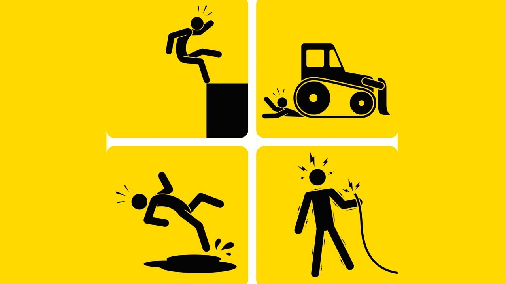

¿Qué son los riesgos laborales?
El riesgo laboral es un concepto fundamental en el ámbito de la seguridad y salud en el trabajo. Se refiere a cualquier circunstancia que pueda causar un peligro durante el desarrollo de una actividad laboral, resultando en accidentes o daños físicos y/o psicológicos para los trabajadores.
Riesgos ergonómicos en el uso del ordenador
Estos riesgos incluyen movimientos repetitivos, posturas forzadas y manipulación manual de cargas que pueden causar lesiones musculoesqueléticas.
Riesgos eléctricos y de equipos informáticos
Incluyen la posibilidad de electrocución, cortocircuitos, o fallos en el hardware que puedan poner en riesgo la seguridad de los trabajadores.
Riesgos de ciberseguridad
Se refieren a amenazas digitales como virus, ataques informáticos o pérdida de datos que pueden afectar tanto a la empresa como a sus empleados.
Medidas de prevención
El uso correcto del equipo, pausas activas, mantener los equipos actualizados y la concienciación son claves para prevenir riesgos laborales.
